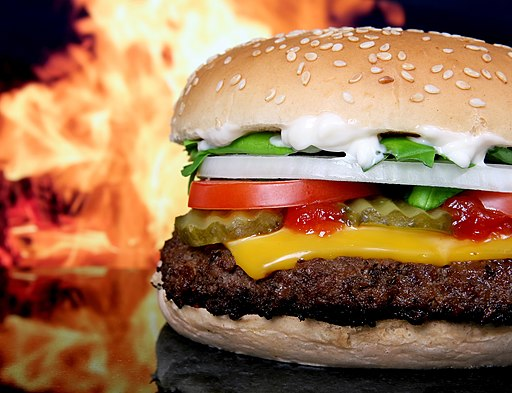

HOME
Cheeseburgers

Description
It's an all-American classic, the cheeseburger! This recipe is super customizable, as burgers naturally are, so feel free to substitute the cheese, buns, toppings, or type of beef with whatever is your favorite! That's what's so beautiful about the burger.
Ingredients
- Ground beef - Ideally, 50/50 brisket and chuck with 20% fat, or whatever your preferred blend is. Make sure to get at least 4oz of beef per burger patty.
- Sliced cheese - I like pepper jack or gouda for a melty, smoky taste. But feel free to use whatever cheese you prefer!
- Burger buns
- Toppings:
- Lettuce
- Tomato slices
- Sliced onion
- Pickle chips
- Any other toppings you like (ex. cherry peppers, jalapeno, bacon, etc.)
- Sauce for topping (Barbecue, ketchup, mayonnaise, mustard, etc.)
Steps
If a grill is not an option, you can use a cast iron skillet or griddle inside on your normal cooking range.
- Make the patties
- Separate your ground beef into equal size, 4oz balls
- Gently mold those balls to the shape of a burger patty, about 1/2-inch thick
- Season on both sides, and keep to the side until skillet is preheated and ready to cook patties
- Cook the patties
- Preheat your pan over medium-high heat and add a bit of oil
- Add burger patties to the preheated pan one by one, as many will comfortably fit in the pan without touching
- Cook on one side for about 5-7 minutes, until juices run clear out of the top of the patty
- Flip patty and cook an additional 3-5 minutes, until internal temperature reaches at least 165℉
- Melt slices of cheese on top of patties for 1-2 minutes before removing from pan
- Toast the buns using your preferred method
- Assemble the burgers
- Place the patty on top of the bottom bun
- Add toppings on top of patty
- Spread sauce on the underside of the top bun
- Complete your burger and enjoy!